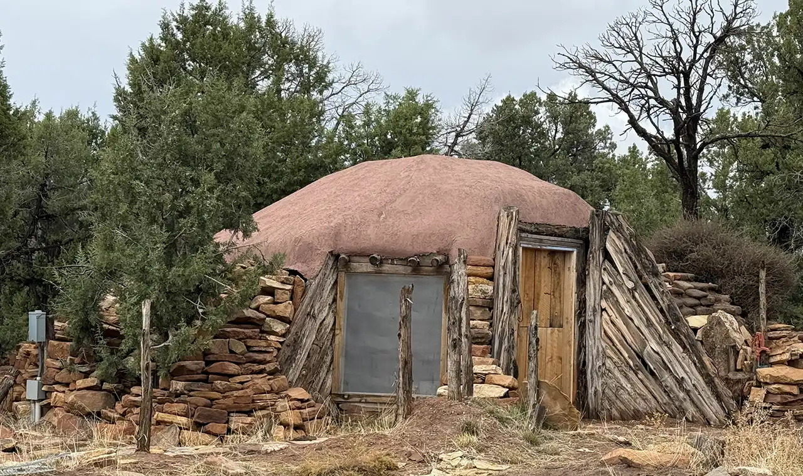
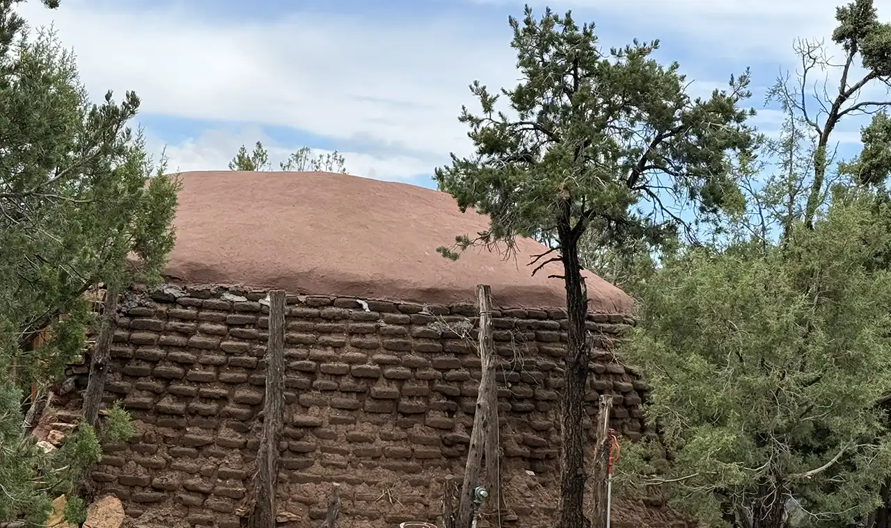
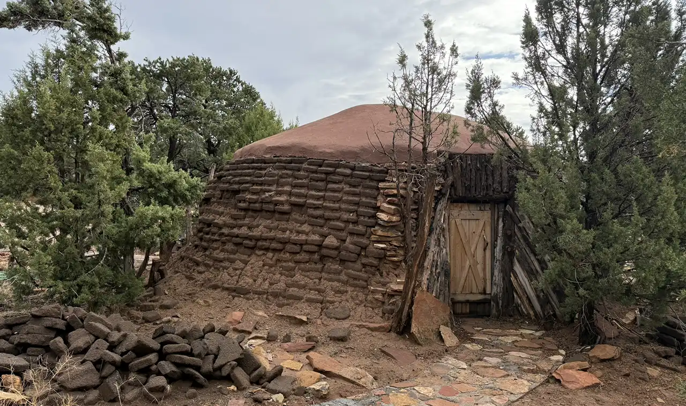
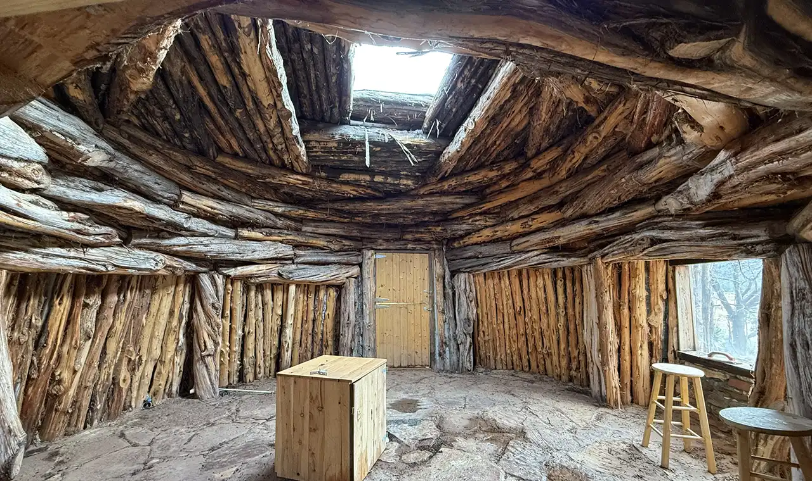
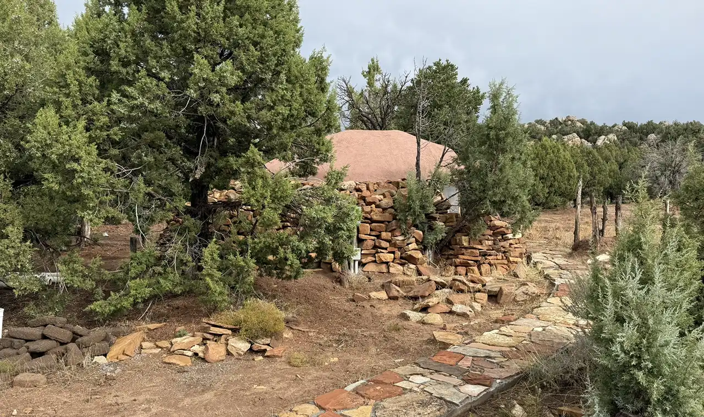
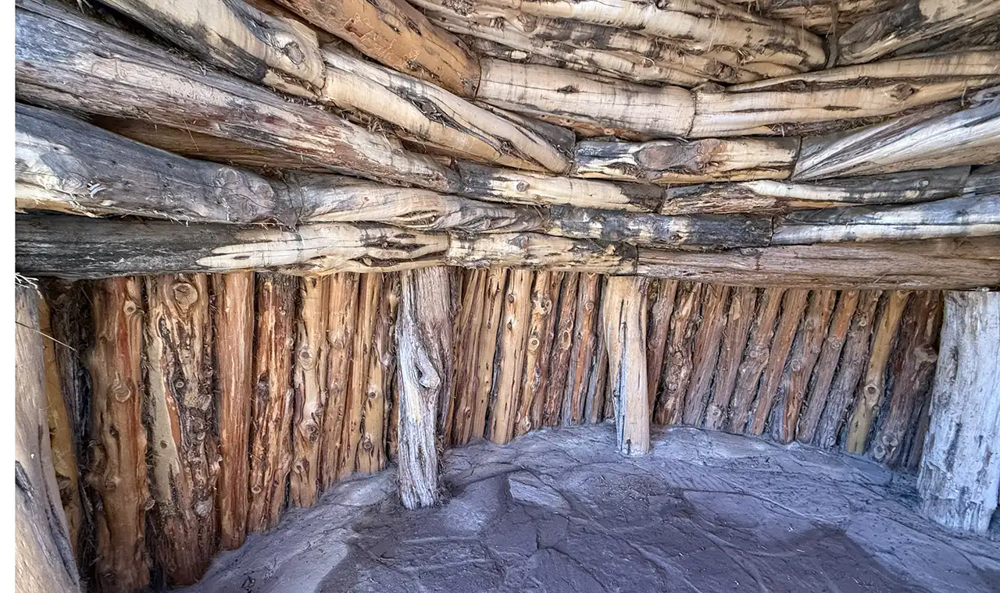

Unique Hogans
Hogans made of cedar posts, rammed earth, and red sandstone rock. The top is made of waterproof earth and plaster, and the split door faces east to greet the rising sun.

North Hogan
Front View with split door. Split door can be open on top for air and beautiful sunrises.

Back of Hogan
Hogans are built with tamped earth and reinforced with rock. Some of the walls are 6 foot thick.

South Hogan
Hogans have 2 doors and a screen window for air circulation.

North Hogan Inside View
Inside each hogan is a layout of hand cut cedar posts with a sun opening in the top.

Hogan Lanscape
Throughout the area there are native stone walkways to each structure.

South Hogan Inside View
Hogans have kitchen sinks and a fireplace in the middle for chilly evenings.